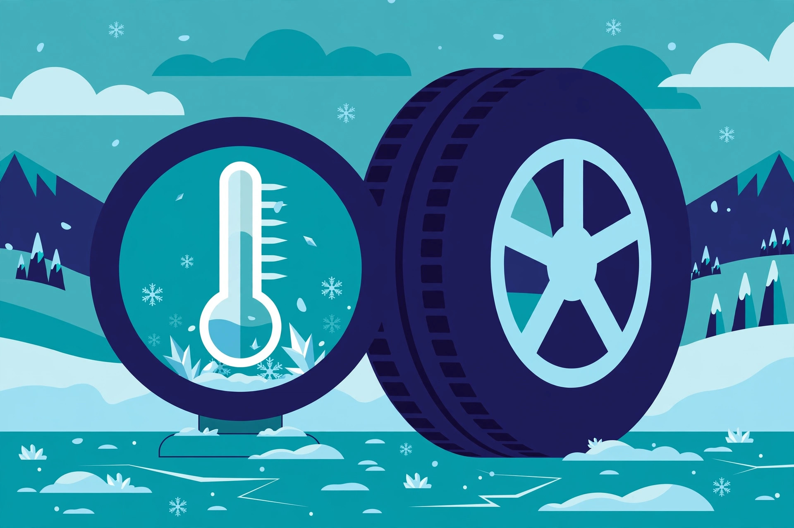

If you've ever wondered why tire shops start pushing winter tires in October — before a single flake falls — this is the reason. The rule isn't about snow. It's about temperature: when the thermometer sits below about 7°C, winter tires grip better than all-season tires. On dry pavement. In rain. Long before the road turns white.
Why temperature matters more than snow
A tire's grip comes from the rubber conforming to tiny irregularities in the road surface — literally wrapping around the pavement's texture. All-season tires are made from a rubber compound tuned for warm and mild weather. As temperatures drop, that compound stiffens. Stiff rubber can't conform, so it skates across the texture instead of gripping it. Winter tires use a softer compound with more natural rubber content that stays flexible in the cold. Same road, same car — the tire simply meets the pavement differently.
This is why "I drive mostly on cleared roads" isn't the argument for winter tires that it sounds like. Cleared winter roads in most of Canada still sit below 7°C for months. The compound advantage applies on cold dry asphalt just as it does in slush.
Compound is the headline; tread is the supporting act
Winter tires also look different — deeper grooves, thousands of tiny slits called sipes that bite into ice and packed snow, and open tread patterns that clear slush. Those features matter, especially the sipes. But the tread pattern is the supporting act. The compound is what changes the game at 7°C and below, because it works on every surface, including the bare cold pavement where you'll spend most of the winter.
This distinction is also why "all-weather" tires (a distinct category from all-season) exist: they carry a winter-rated compound with the 3PMSF mountain-snowflake mark while being designed to stay on the car year-round. Our buying guide walks through what that symbol means.
Where the payoff is biggest
Not every driver gets the same return from a set of winter tires. The payoff is highest when most of these are true:
- You drive daily through winter. A daily commuter below 7°C for months is exactly the use case winter tires were designed for.
- You see ice regularly. Freeze-thaw cycles, overnight frost, black ice on bridges — the compound advantage is most dramatic where grip is scarcest.
- You drive rural or unplowed routes. Cleared highways are one thing; side streets, gravel roads, and cottage country are another.
- Your vehicle needs help, not the other way around. Rear-wheel-drive cars, heavier vehicles, and anything with low-profile performance tires benefit disproportionately.
If your daily drive runs October through April and your mornings regularly start near freezing, winter tires are one of the best safety purchases you can make for a car. That's our opinion — but it's an opinion shared by essentially every winter-driving instructor and tire professional we've ever seen quoted on the subject.
When all-seasons are honestly fine
There are real situations where winter tires are optional, and anyone telling you otherwise is selling something:
- Mild coastal winters. Parts of the West Coast rarely sustain sub-7°C temperatures. If your winter is mostly rain at 10°C, dedicated winter tires add little.
- The car barely moves in winter. A second vehicle that sits in the garage from November to March doesn't need winter rubber.
- Short, predictable cold snaps. If cold weather means a week of frost you can simply drive around — or stay home for — all-seasons plus caution are defensible.
Note the honest pattern: the question is always "how many hours will this car spend on cold pavement?" — not "does it snow here?"
The four-tire rule (non-negotiable)
If you buy winter tires, buy four. Putting winter tires on only the drive axle creates a grip mismatch: the car can accelerate or steer confidently while the other end has far less grip, which is exactly how spinouts happen. A front-wheel-drive car with winter tires up front and all-seasons at the rear can rotate unexpectedly in a turn. Tire professionals are near-unanimous on this one: four matching winter tires, or none at all.
Winter tires improve grip — they don't repeal physics. Stopping distances on ice are still long, and no tire compensates for speed. This guide is general information, not professional advice; if you're unsure what your vehicle needs, ask a qualified tire professional and check your owner's manual.
The bottom line
The 7°C rule is a shortcut for a real physical fact: rubber gets hard in the cold, and hard rubber grips less. Winter tires fix that. If your driving life runs cold for months, they're worth it. If it doesn't, save your money — and if you're in Quebec, the decision is made for you: see our guide to the December 1 mandatory rule.